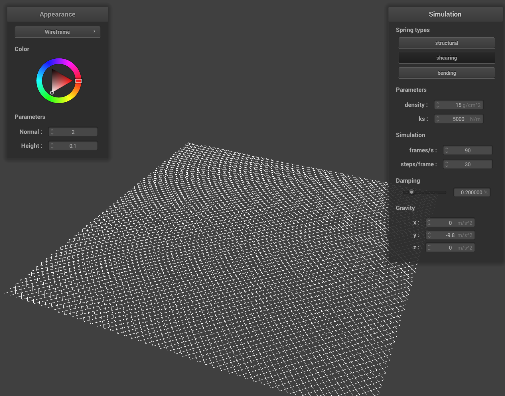

For Part 1, I implemented a system to generate a grid of point masses and spring contraints to form the basis for our cloth simulation.
You can see below the cloth generated by this code:

Here's a closer view. All constraints are turned on for this picture.
In this picture, I turned off the shearing constraints...

And in this picture, I turned off everything but the shearing constraints.
In Part 2, I implemented physical simulation for the cloth, tweaking a variety of parameters to see the effect they had on the simulation.
To begin, here is the resting state of the cloth.
Turning down the spring constant ks to 100 causes the resting state to be much flatter but wavier at the top. Additionally, the bottom of the cloth is somewhat "bowed out."

Turning it up to 25000 instead causes the opposite effect, with the top of the cloth having a single large bump and the rest of the cloth being practically perfectly square.

Moving to density, increasing it to 1000 g/cm^2 amplifies the ripple effect at the top of the cloth. It also intensifies the bowing shape at the top. Additionally, during the simulation, the bottom edge of the cloth barely swung, instead coming to a resting state quickly.

On the other hand, with a density of 1 g/cm^2, it barely has a bowed shape at the top at all.
The effect of reducing damping is that the cloth takes a very long time to stop moving, swinging back and forth and folding in on itself repeatedly. Additionally, the surface is much more bumpy.

Increasing damping causes the cloth to fall very slowly, and once it reaches its final position, it does not undulate much. Notably, the final position here is the same as with standard damping.
Finally, here is a picture of the cloth simulation when all four corners are pinned instead of just two corners.

In Part 3, I implemented physical collision with spheres and planes.
Here's what the cloth looks like resting on the sphere by default.
If we turn down the spring constant to just 500, the cloth drapes over the sphere significantly more instead of puffing out, causing it to end up with a wavier shape and slimmer overall profile.
On the other hand, raising it to 50000 causes it to refuse to fold as much, leading it to almost look like a tablecloth as it spreads out wide with few folds.
I also implemented collision with a plane. Here's the cloth resting on the plane after falling down.

In Part 4, I implemented cloth self-collision by measuring the distance between points and pushing apart points that get too close.
When the cloth begins to fall, we immediately notice a sort of "wavy crumpling" at the bottom that continues as it falls.

These waves grow more intense as the fall continues until it has the appearance of layered icing.

Once the cloth descends, it stays stacked in waves, though it slowly pulls itself flat.

The top layer falls over, which drags the next layer...
And then that layer drags down the next, until it lays mostly flat on the plane.
Repeating the experiment with higher density, we see it crumples into a wad instead of falling into smooth layers.
Lower density instead intensifies the waviness.

Raising the spring constant causes crumpling similar to the effect of high density.

Lowering it causes more waves similar to as was shown with lower density.